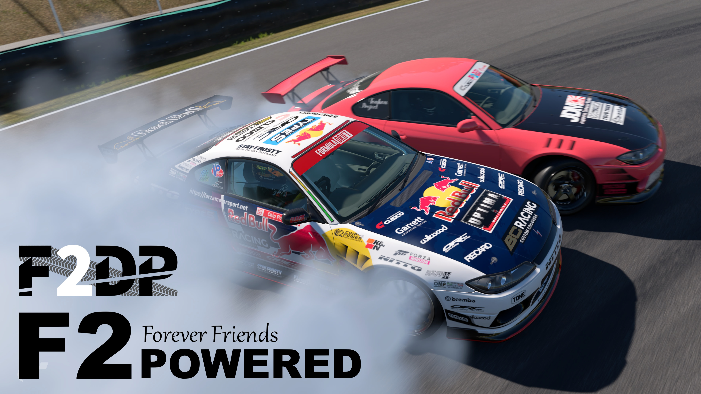

F2Powered主催"F2DP"の概要
このページではF2Powered主催の"F2DP"のコース、
レギュレーション、クリップ等の説明をしています。
※なお現段階のF2DPはF2Poweredリーダーの招待限定となっています。
News
Track
1st,SUZUKA circuit east (Reverse)
→鈴鹿のクリップ説明動画URL←

2st,Interlagos

3st,Circuit de Barcelona-Catalunya
No image
4st,Aotopolis


5st,FD Load Atlanta


スタート方法
追走: 前車は指定の場所に左側、後車は前車の右側
(フロントバンパーが横に並ぶよう)に並んで下さい。
単走: 追走の前車と同じ様に指定の場所に並んで下さい。
スタートする際の場合は、前車は前方に車2台分の
距離の間で、1台分左へ蛇行して下さい。
(後車は前車に合わせてスタートして下さい)
の場合は、追走の前車と同じ様にスタートして下さい
Regulation
- タイヤ: Confort Medium
- 駆動方式: FR,RWD only
- 馬力: 600ps以上
- 車重: 1240kg以上
- 車高: 80~140mm以内
- 前後重量配分: 48:52以上 リア寄りにすること
- ロールケージ: ロールケージを取り付けること
- リバリー: 自作リバリー(依頼品でも可)であること
- 規定ステッカー:
- TypeS、F2poweredのロゴをサイド両側に
1枚ずつは貼ること - タイヤ、ホイール、サスペンション、オイル
メーカーを各1社ずつ決めてそれぞれ貼ってください - TypeSのブレーキライトをの様に貼ること
(TypeSのブレーキランプのデカールは
Chip-Powerが公開しているのでご使用下さい) - 自分のゼッケン、または自分のロゴをの
青い範囲に貼ること
(ゼッケンのサイズは、直接入力で縦横共に「60」) 
- ハチマキは背景を黄色(45,100,90)にして左から、
chip-powerが出している黒のクスコ、F2DP、
黒色のブレンボを貼ること
(配置やサイズ具合、色合い等はを参照して下さい) 
Grading criteria & Grading methods
採点基準
- ライン.....車両がアウトゾーンやタッチアンドゴーエリアを
通過する技術と、クリッピングポイントへ果敢な
アプローチをする技術を審査します。
- アングル.....最初の振り出しポイントから深い角度を維持
しながらコースを完走するドライバーの能力を審査します。
- パッション.....コース全体で車両をどのように操縦するかを
審査します。主にどれだけアグレッシブに、積極的に攻めて
いるかを審査します。
それぞれ3つの採点割合は大体このようになっています。
、、
追走の場合はこれらに加え、リードは上記の採点基準、チェイスは
上記プラス
とゆう審査基準も追加されます。
単走の採点方法
ゾーンは最大ポイント、クリップは最大ポイント、
タッチアンドゴーは最大ポイントになります。
例えばゾーンが4つクリップが2つだった場合、5×4+3×2で
最大26ポイント獲得出来る計算になります。
追走の採点方法
検討中です。